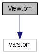
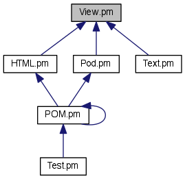

Main Page
Related Pages
Modules
Namespaces
Classes
Files
File List
File Members
All
Classes
Namespaces
Files
Functions
Variables
Typedefs
Enumerations
Enumerator
Macros
Groups
Pages
src
utilities
perl
CMakeFiles
utilities_perl.dir
build
BASIS
Pod
POM
View.pm File Reference
#include "vars.pm"
Include dependency graph for View.pm:

This graph shows which files directly or indirectly include this file:

Go to the source code of this file.
 Include dependency graph for View.pm: This graph shows which files directly or indirectly include this file:
Include dependency graph for View.pm: This graph shows which files directly or indirectly include this file: